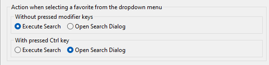

Release Notes of ABAP Search Favorites 1.1.0
ABAP Search Favorites
Features
- Favorites can now be renamed
- Project independent favorites are executed with the project from the active workspace selection
- New preference to control the action upon selecting a favorite from the dropdown menu

New preference for selection action